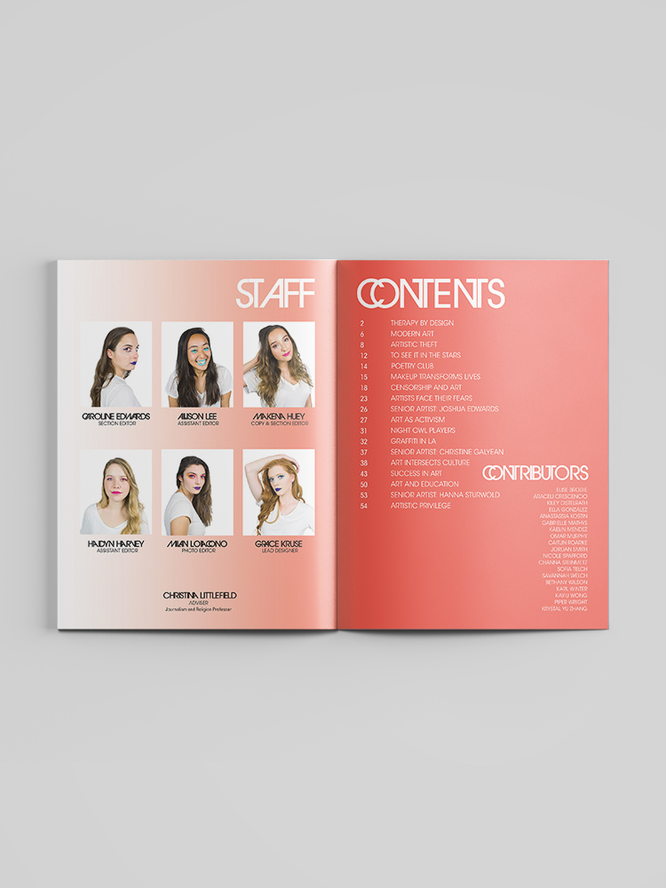
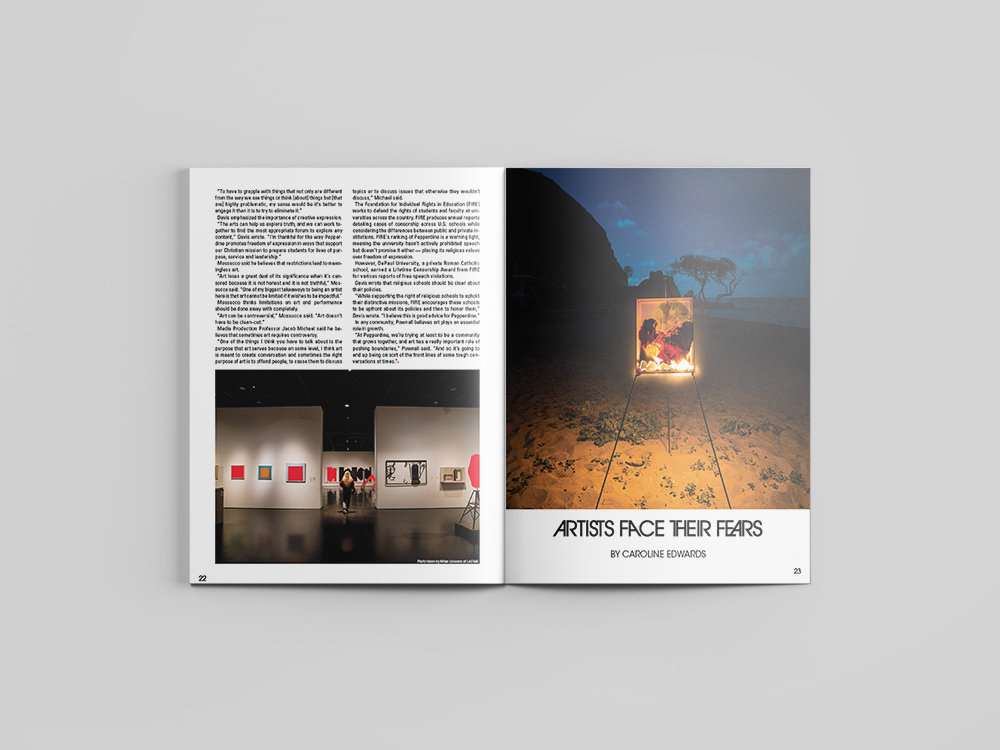
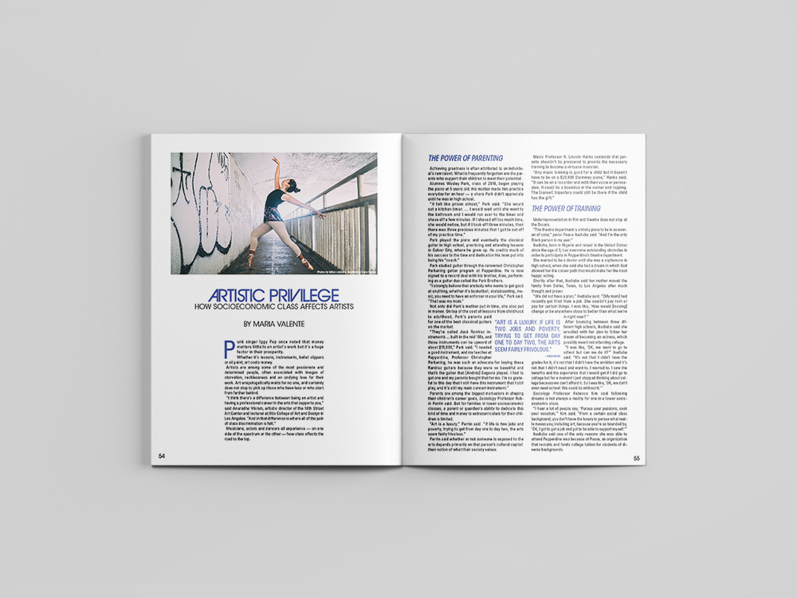
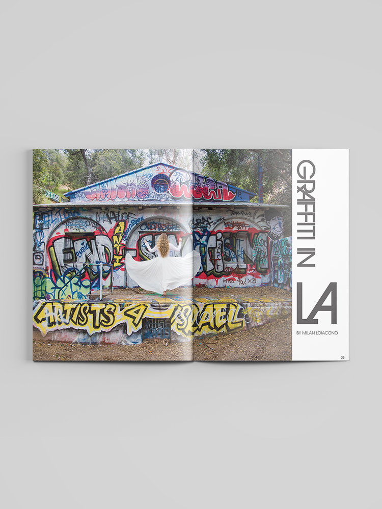

Cover design featuring primary colors and bold typography

Table of contents spread

Feature article spread

3rd Place Best Inside Design Spread - College Media Conference

Interior spread with Avant Garde typography

Interior spread design

Final spread design
Design Philosophy
This magazine was an exploration of pushing design boundaries while maintaining readability and structure. By using the three primary colors as the foundation and pairing them with Avant Garde's distinctive ligatures, I created a visual language that felt both playful and intentional.
Creative Team
Huge shoutout to the amazing team that helped create this magazine. As always, this wouldn't have come to life without the work of the writers, editors, and incredible photographer, Milan Loiacono. The collaborative process was essential to bringing this vision to life.
View Full Magazine
Want to see more? Click here to view the full magazine on Issuu.